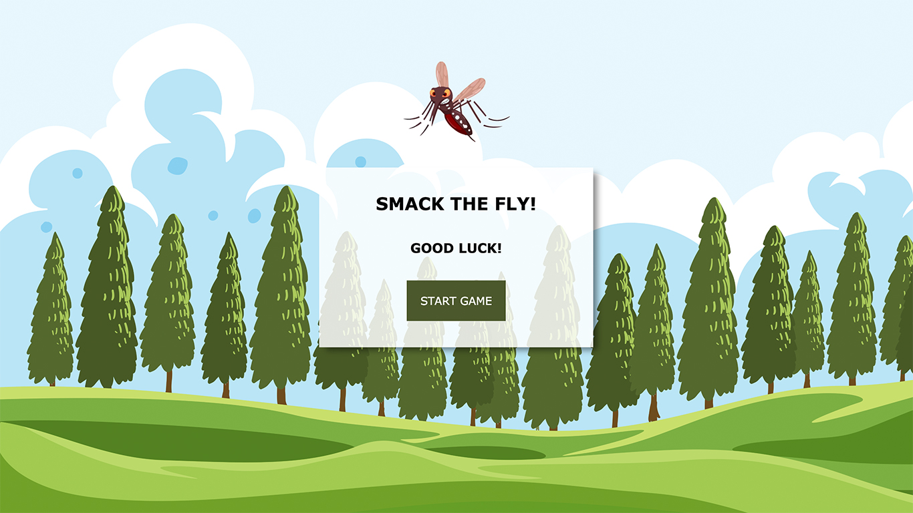

In this theme I was introduced to the basic terminology within user
interface design, digital
communication, user testing, and responsive web design. I have refreshed my skills in html and css
coding as well as basics in Photoshop and Illustrator.
02
BASIC CONTENT
This module included development of video production, as a
dramaturgy elements, film language, recording and editing
techniques. I was expected to work in several different teams during this
theme, so I have gained some experience working in the group as well.
03
BASIC ANIMATION
This theme contained both individual and group productions.
The main goal was to create a few interactive animations with an interactive story with focus on
the story,
a style, character design, animations and interactivity designed for a specific target
group. I had to use my skills in sketching, hand drawing and then drawing visual universe and
characters in illustrator. I have learned about animation principles which I used later and I had
to expand my skills in HTML and CSS as well, because I had to add SVG files and audio elements to
the site as well as use advanced selectors, transitions, keyframe animations, querySelector, events
& eventListeners and so on.
Despite the fact that it was a bit difficult I really enjoyed this theme.

04
BASIC UX
This fourth theme gave me a basic understanding of how
interaction between users and user interfaces works, as well as which theories, tools
and methods I can use for research, design, testing and production of digital
solutions for smartphones so that my work is based on specific insights about actual
users instead of my own feelings.
Our first group project was to create prototype of a website in XD.
This website had to include two pages about cycling in Copenhagen. Deciding in our group was not a
problem at all,
we could easily say our ideas and chose the best one. My role in this project was to create a
design, but of course
we were discussing every move, so everyone could say his opinion.
Story without words was a challenging project, where our task was to create an
interesting story only with motion and sounds. We have decided upon a story of 2 different persons,
one who is a morning person and one who really isn’t, and how it can affect your whole day and even
life.
During this project we learn the right way
of using a camera and basics in filming and dramaturgy.
This was my first big group project, during which I learned how to work with
content, how to select the important stuff and through hierarchical principles present it to the
user. We created a video about biking and a microsite, where the video was presented alongside
with other informations.